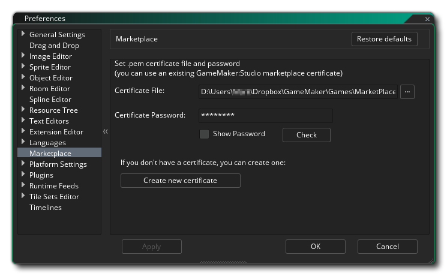
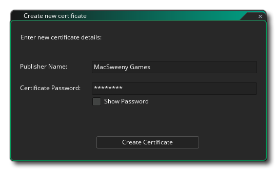

The Marketplace Preferences are used to set up the Marketplace Certificate for uploading or buying assets. The certificate form consists of the following sections for when you have already created a certificate:
- Certificate File: This section is where you specify the *.pem file that the Marketplace uses for certification of assets. If you have a previously created certificate then you can click the file browser button here and add it in to the forum, but if you do not have a certificate and wish to make one, then you should omit any information here and instead click to the Create New Certificate button explained below.
- Certificate Password: Here you must input the certificate password for the file selected above. The password is created when you first create the *.pem file (see Create A New Certificate, below) and will be irreversibly linked to the certificate file created.
- Check: Once you have filled in the above fields you should click this button to ensure that the password and file selection are correct and work together.
If you have not previously made a certificate file for using the Marketplace, then you should click the button labelled Create New Certificate at the bottom of this form. When you do that, a new window will open requesting that you input the following information:

- Publisher Name: This is the name that will be used as the Publisher name for the asset. Within the Marketplace dashboard you can set up different publishers if you require and each one should have it's own corresponding *.pem certificate file.
- Certificate Password: Here you must give a unique password for the certificate file to be created. Take care with what you choose as you cannot change it later and if you do not have the correct password for the certificate file in the sections above you will not be able to update any existing Marketplace assets (nor upload new ones).
With those details given you can then click on the Create Certificate button to generate the *.pem file. You will be prompted to give a save location and a name for the file, and you should take note of this for future reference. Once you have done that, the new file and password will be automatically added into the form fields listed above and you can click on the Check button to test that the certificate has been generated correctly.